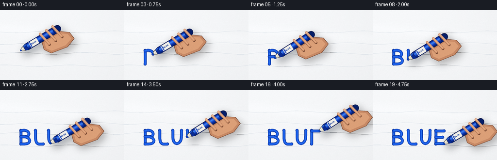
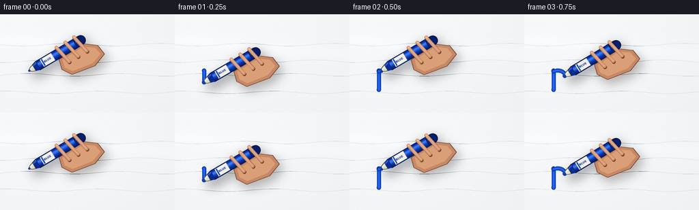
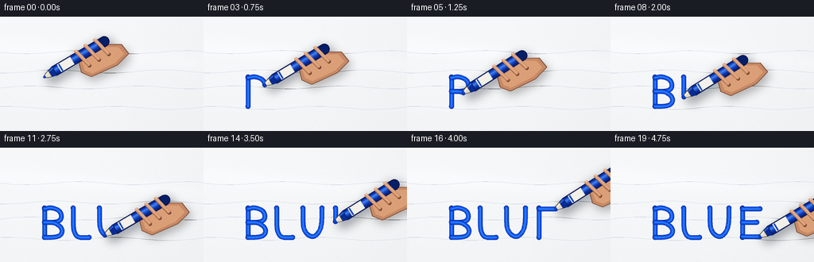
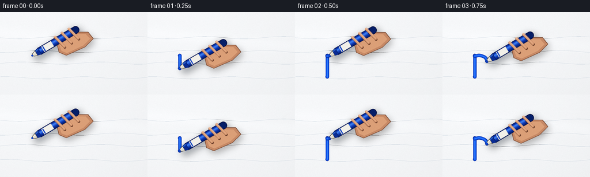

CODING AGENTS AS PIXEL WORLD MODELS
traex/DeepSeek-V4.1-Flash · phygen_032
点击播放 · 原生 RGB 像素
逐轮保存的候选
回放视频、检查图与代码变化。
每份候选均可单独播放。实际图片检查记录在下方工具轨迹中。
候选 01播放与检查图
点击播放 · 原生 RGB 像素


展开代码变化
--- 上一保存版本
+++ 本次保存版本
@@ -0,0 +1,488 @@
+from pathlib import Path
+import math
+
+import numpy as np
+from PIL import Image, ImageDraw, ImageFilter, ImageFont
+
+import artifact_io
+
+
+CASE_DIR = Path(__file__).resolve().parent
+WIDTH, HEIGHT = 256, 144
+FRAME_COUNT, FPS = 20, 4.0
+SS = 4
+CW, CH = WIDTH * SS, HEIGHT * SS
+
+INK_DARK = (7, 42, 137, 255)
+INK_MAIN = (18, 81, 219, 255)
+INK_LIGHT = (45, 120, 246, 255)
+
+
+def smooth_polyline(points, iterations=3):
+ pts = np.asarray(points, dtype=np.float64)
+ for _ in range(iterations):
+ out = [pts[0]]
+ for p, q in zip(pts[:-1], pts[1:]):
+ out.append(0.75 * p + 0.25 * q)
+ out.append(0.25 * p + 0.75 * q)
+ out.append(pts[-1])
+ pts = np.asarray(out)
+ return pts
+
+
+def arc_lengths(points):
+ deltas = np.diff(points, axis=0)
+ lengths = np.hypot(deltas[:, 0], deltas[:, 1])
+ return np.r_[0.0, np.cumsum(lengths)]
+
+
+def partial_polyline(points, cumulative, distance):
+ total = cumulative[-1]
+ if distance <= 0:
+ return points[:1]
+ if distance >= total:
+ return points
+ index = int(np.searchsorted(cumulative, distance, side="right"))
+ index = max(1, min(index, len(points) - 1))
+ d0, d1 = cumulative[index - 1], cumulative[index]
+ fraction = (distance - d0) / max(d1 - d0, 1e-9)
+ endpoint = points[index - 1] * (1.0 - fraction) + points[index] * fraction
+ return np.vstack([points[:index], endpoint])
+
+
+STROKE_SPECS = [
+ [(43, 83), (43, 111)],
+ [(43, 84), (50, 82), (58, 85), (60, 91), (57, 96), (43, 96)],
+ [(43, 96), (54, 96), (61, 101), (61, 107), (56, 111), (43, 111)],
+ [(73, 83), (73, 111), (89, 111)],
+ [(100, 83), (100, 100), (102, 107), (108, 111), (114, 108), (118, 101), (118, 83)],
+ [(130, 83), (130, 111)],
+ [(130, 84), (147, 84)],
+ [(130, 97), (144, 97)],
+ [(130, 110), (147, 110)],
+]
+
+STROKES = []
+for spec in STROKE_SPECS:
+ points = smooth_polyline(spec, iterations=3)
+ cumulative = arc_lengths(points)
+ STROKES.append(
+ {
+ "points": points,
+ "cumulative": cumulative,
+ "length": float(cumulative[-1]),
+ }
+ )
+
+TOTAL_INK_LENGTH = sum(stroke["length"] for stroke in STROKES)
+TIMELINE_START = 0.0
+GAP_DURATION = 0.008
+WRITING_DURATION = 0.955 - GAP_DURATION * (len(STROKES) - 1)
+
+
+def writing_state(t):
+ cursor = TIMELINE_START
+ completed = 0
+ for index, stroke in enumerate(STROKES):
+ if index > 0:
+ if t < cursor + GAP_DURATION:
+ return completed, None, stroke["points"][0]
+ cursor += GAP_DURATION
+
+ duration = WRITING_DURATION * stroke["length"] / TOTAL_INK_LENGTH
+ if t < cursor + duration:
+ fraction = np.clip((t - cursor) / max(duration, 1e-9), 0.0, 1.0)
+ distance = fraction * stroke["length"]
+ partial = partial_polyline(stroke["points"], stroke["cumulative"], distance)
+ return completed, partial, partial[-1]
+
+ cursor += duration
+ completed += 1
+
+ return completed, None, STROKES[-1]["points"][-1]
+
+
+def make_background(t, rng, noise):
+ x = np.linspace(0.0, 1.0, CW, dtype=np.float32)[None, :]
+ y = np.linspace(0.0, 1.0, CH, dtype=np.float32)[:, None]
+
+ light = 244.0 + 4.0 * (1.0 - y) + 1.4 * (1.0 - x)
+ sheen_center = 0.25 + 0.16 * x + 0.010 * math.sin(t * math.tau + 0.4)
+ sheen = 3.1 * np.exp(-((y - sheen_center) / 0.075) ** 2)
+ cool_edge = -2.2 * (x**2) - 1.0 * (1.0 - y) * x
+ vignette = -3.0 * (((x - 0.5) ** 2) * 1.15 + ((y - 0.5) ** 2))
+
+ streak_light = np.zeros_like(light)
+ for index in range(5):
+ center = 0.18 + index * 0.145 + 0.012 * math.sin(index * 1.7 + t * 1.2)
+ width = 0.004 + 0.0015 * (index % 3)
+ amplitude = 0.65 if index % 2 == 0 else 0.42
+ streak_light += amplitude * np.exp(
+ -((y - (center + 0.025 * x + 0.002 * np.sin(x * 21.0 + index))) / width) ** 2
+ )
+
+ base = light + sheen + cool_edge + vignette + streak_light + noise
+ red = np.clip(base - 1.2, 0, 255)
+ green = np.clip(base + 0.2, 0, 255)
+ blue = np.clip(base + 2.0, 0, 255)
+ rgb = np.stack([red, green, blue], axis=2).astype(np.uint8)
+ image = Image.fromarray(rgb, "RGB").convert("RGBA")
+
+ draw = ImageDraw.Draw(image, "RGBA")
+ for index in range(4):
+ yy = (0.31 + index * 0.16 + 0.012 * math.sin(index * 2.3)) * CH
+ points = []
+ for xf in np.linspace(-0.05, 1.05, 40):
+ px = xf * CW
+ py = yy + 2.0 * SS * math.sin(xf * 12.0 + index * 1.4)
+ points.append((px, py))
+ draw.line(points, fill=(190, 202, 214, 12), width=max(1, SS // 2), joint="curve")
+
+ return image
+
+
+def local_point(tip, u, v, d, offset):
+ return tip + u * d + v * offset
+
+
+def draw_capsule(draw, a, b, width, fill):
+ a_hr = (float(a[0] * SS), float(a[1] * SS))
+ b_hr = (float(b[0] * SS), float(b[1] * SS))
+ width_hr = max(1, int(round(width * SS)))
+ draw.line([a_hr, b_hr], fill=fill, width=width_hr)
+ radius = width_hr / 2.0
+ for point in (a_hr, b_hr):
+ draw.ellipse(
+ [point[0] - radius, point[1] - radius, point[0] + radius, point[1] + radius],
+ fill=fill,
+ )
+
+
+def draw_polygon(draw, points, fill, outline=None, width=1):
+ pts = [(float(p[0] * SS), float(p[1] * SS)) for p in points]
+ draw.polygon(pts, fill=fill)
+ if outline is not None:
+ draw.line(pts + [pts[0]], fill=outline, width=max(1, int(width * SS)), joint="curve")
+
+
+def draw_ink(image, t):
+ completed, partial, _ = writing_state(t)
+ layer = Image.new("RGBA", image.size, (0, 0, 0, 0))
+ draw = ImageDraw.Draw(layer)
+
+ def render_polyline(points, color, width):
+ if len(points) < 2:
+ return
+ pts = [(float(p[0] * SS), float(p[1] * SS)) for p in points]
+ draw.line(pts, fill=color, width=max(1, int(round(width * SS))), joint="curve")
+ radius = width * SS / 2.0
+ for point in (pts[0], pts[-1]):
+ draw.ellipse(
+ [point[0] - radius, point[1] - radius, point[0] + radius, point[1] + radius],
+ fill=color,
+ )
+
+ for stroke in STROKES[:completed]:
+ render_polyline(stroke["points"], INK_DARK, 6.1)
+ render_polyline(stroke["points"], INK_MAIN, 4.7)
+ render_polyline(stroke["points"], INK_LIGHT, 1.15)
+ if partial is not None:
+ render_polyline(partial, INK_DARK, 6.1)
+ render_polyline(partial, INK_MAIN, 4.7)
+ render_polyline(partial, INK_LIGHT, 1.15)
+
+ return Image.alpha_composite(image, layer)
+
+
+def marker_basis(tip, t):
+ angle = math.radians(-31.5 + 1.15 * math.sin(t * math.tau * 2.0 + 0.7))
+ u = np.array([math.cos(angle), math.sin(angle)], dtype=np.float64)
+ v = np.array([-u[1], u[0]], dtype=np.float64)
+ return u, v, angle
+
+
+def draw_marker_shadow(image, tip, u, v):
+ layer = Image.new("RGBA", image.size, (0, 0, 0, 0))
+ draw = ImageDraw.Draw(layer, "RGBA")
+
+ draw_capsule(
+ draw,
+ local_point(tip, u, v, 8, 0),
+ local_point(tip, u, v, 88, 0),
+ 16.0,
+ (29, 39, 52, 95),
+ )
+ palm = [
+ local_point(tip, u, v, 47, 8),
+ local_point(tip, u, v, 88, 7),
+ local_point(tip, u, v, 105, 18),
+ local_point(tip, u, v, 108, 36),
+ local_point(tip, u, v, 86, 43),
+ local_point(tip, u, v, 51, 37),
+ local_point(tip, u, v, 42, 23),
+ ]
+ draw_polygon(draw, palm, (38, 28, 22, 80))
+ for d in (53, 68, 83):
+ draw_capsule(
+ draw,
+ local_point(tip, u, v, d - 2, -9),
+ local_point(tip, u, v, d + 4, 18),
+ 10.5,
+ (47, 31, 23, 85),
+ )
+
+ shadow = layer.filter(ImageFilter.GaussianBlur(7.5 * SS))
+ shifted = Image.new("RGBA", image.size, (0, 0, 0, 0))
+ shifted.alpha_composite(shadow, (int(5 * SS), int(7 * SS)))
+ return Image.alpha_composite(image, shifted)
+
+
+def draw_palm(image, tip, u, v):
+ layer = Image.new("RGBA", image.size, (0, 0, 0, 0))
+ draw = ImageDraw.Draw(layer, "RGBA")
+ palm = [
+ local_point(tip, u, v, 46, 8),
+ local_point(tip, u, v, 89, 7),
+ local_point(tip, u, v, 105, 19),
+ local_point(tip, u, v, 107, 35),
+ local_point(tip, u, v, 86, 43),
+ local_point(tip, u, v, 51, 37),
+ local_point(tip, u, v, 42, 23),
+ ]
+ draw_polygon(draw, palm, (199, 137, 101, 255), (124, 77, 55, 255), 1.0)
+ inner = [
+ local_point(tip, u, v, 50, 11),
+ local_point(tip, u, v, 86, 10),
+ local_point(tip, u, v, 100, 20),
+ local_point(tip, u, v, 102, 32),
+ local_point(tip, u, v, 85, 38),
+ local_point(tip, u, v, 54, 33),
+ local_point(tip, u, v, 47, 23),
+ ]
+ draw_polygon(draw, inner, (219, 159, 119, 255))
+ return Image.alpha_composite(image, layer)
+
+
+def body_color(position):
+ dark = np.array([4, 25, 91], dtype=np.float64)
+ base = np.array([11, 53, 177], dtype=np.float64)
+ highlight = np.array([65, 132, 246], dtype=np.float64)
+ if position < 0.18:
+ f = position / 0.18
+ color = dark * (1 - f) + base * f
+ elif position < 0.38:
+ f = (position - 0.18) / 0.20
+ color = base * (1 - f) + highlight * f
+ elif position < 0.68:
+ f = (position - 0.38) / 0.30
+ color = highlight * (1 - f) + base * f
+ else:
+ f = (position - 0.68) / 0.32
+ color = base * (1 - f) + dark * f
+ return tuple(int(c) for c in np.clip(color, 0, 255)) + (255,)
+
+
+def draw_rotated_label(image, tip, u, v, angle):
+ font_path = "/usr/share/fonts/truetype/dejavu/DejaVuSans-Bold.ttf"
+ try:
+ font = ImageFont.truetype(font_path, 17 * SS // 4)
+ except OSError:
+ font = ImageFont.load_default()
+ text = "BLUE"
+ probe = Image.new("RGBA", (1, 1), (0, 0, 0, 0))
+ probe_draw = ImageDraw.Draw(probe)
+ bbox = probe_draw.textbbox((0, 0), text, font=font)
+ text_image = Image.new("RGBA", (bbox[2] - bbox[0] + 8, bbox[3] - bbox[1] + 8), (0, 0, 0, 0))
+ td = ImageDraw.Draw(text_image)
+ td.text((4 - bbox[0], 4 - bbox[1]), text, font=font, fill=(11, 48, 144, 255))
+ text_image = text_image.rotate(-math.degrees(angle), expand=True, resample=Image.Resampling.BICUBIC)
+ center = local_point(tip, u, v, 31.0, 0.0) * SS
+ paste_at = (int(center[0] - text_image.width / 2), int(center[1] - text_image.height / 2))
+ image.alpha_composite(text_image, paste_at)
+
+
+def draw_marker(image, tip, u, v, angle):
+ image = draw_marker_shadow(image, tip, u, v)
+ image = draw_palm(image, tip, u, v)
+
+ layer = Image.new("RGBA", image.size, (0, 0, 0, 0))
+ draw = ImageDraw.Draw(layer, "RGBA")
+
+ # Barrel built from narrow shaded strips so the cylinder keeps a consistent highlight.
+ d_values = np.linspace(14.0, 88.0, 150)
+ half_width = 7.35
+ bands = 14
+ for d0, d1 in zip(d_values[:-1], d_values[1:]):
+ for band in range(bands):
+ v0 = -half_width + 2 * half_width * band / bands
+ v1 = -half_width + 2 * half_width * (band + 1) / bands
+ color = body_color((band + 0.5) / bands)
+ quad = [
+ local_point(tip, u, v, d0, v0),
+ local_point(tip, u, v, d0, v1),
+ local_point(tip, u, v, d1, v1),
+ local_point(tip, u, v, d1, v0),
+ ]
+ draw_polygon(draw, quad, color)
+
+ rear_center = local_point(tip, u, v, 87.5, 0)
+ rear_radius = 7.35 * SS
+ draw.ellipse(
+ [
+ rear_center[0] * SS - rear_radius,
+ rear_center[1] * SS - rear_radius,
+ rear_center[0] * SS + rear_radius,
+ rear_center[1] * SS + rear_radius,
+ ],
+ fill=(5, 30, 104, 255),
+ outline=(2, 16, 64, 255),
+ width=max(1, SS),
+ )
+
+ for side in (-half_width, half_width):
+ draw.line(
+ [
+ (local_point(tip, u, v, 14, side)[0] * SS, local_point(tip, u, v, 14, side)[1] * SS),
+ (local_point(tip, u, v, 88, side)[0] * SS, local_point(tip, u, v, 88, side)[1] * SS),
+ ],
+ fill=(3, 19, 73, 255),
+ width=max(1, int(0.65 * SS)),
+ )
+
+ # White label with a tiny printed name.
+ label = [
+ local_point(tip, u, v, 21.5, -6.1),
+ local_point(tip, u, v, 40.5, -6.1),
+ local_point(tip, u, v, 40.5, 6.1),
+ local_point(tip, u, v, 21.5, 6.1),
+ ]
+ draw_polygon(draw, label, (242, 240, 233, 255), (188, 188, 183, 255), 0.55)
+ accent = [
+ local_point(tip, u, v, 22.8, -5.5),
+ local_point(tip, u, v, 24.5, -5.5),
+ local_point(tip, u, v, 24.5, 5.5),
+ local_point(tip, u, v, 22.8, 5.5),
+ ]
+ draw_polygon(draw, accent, (17, 69, 194, 255))
+
+ ring = [
+ local_point(tip, u, v, 77.5, -7.35),
+ local_point(tip, u, v, 79.5, -7.35),
+ local_point(tip, u, v, 79.5, 7.35),
+ local_point(tip, u, v, 77.5, 7.35),
+ ]
+ draw_polygon(draw, ring, (5, 31, 111, 255))
+
+ # Collar and chisel nib.
+ collar = [
+ local_point(tip, u, v, 8.0, -5.2),
+ local_point(tip, u, v, 15.0, -7.35),
+ local_point(tip, u, v, 15.0, 7.35),
+ local_point(tip, u, v, 8.0, 5.2),
+ ]
+ draw_polygon(draw, collar, (9, 43, 148, 255), (3, 22, 79, 255), 0.7)
+ collar_highlight = [
+ local_point(tip, u, v, 8.3, -4.4),
+ local_point(tip, u, v, 14.6, -6.1),
+ local_point(tip, u, v, 14.6, -3.9),
+ local_point(tip, u, v, 8.3, -2.3),
+ ]
+ draw_polygon(draw, collar_highlight, (42, 96, 202, 255))
+
+ nib_outer = [
+ local_point(tip, u, v, 0.2, -1.3),
+ local_point(tip, u, v, 2.8, -3.5),
+ local_point(tip, u, v, 8.1, -5.2),
+ local_point(tip, u, v, 8.1, 5.2),
+ local_point(tip, u, v, 2.8, 3.5),
+ local_point(tip, u, v, 0.2, 1.3),
+ ]
+ draw_polygon(draw, nib_outer, (124, 117, 104, 255), (72, 68, 62, 255), 0.65)
+ nib_inner = [
+ local_point(tip, u, v, 0.9, -0.8),
+ local_point(tip, u, v, 3.3, -2.8),
+ local_point(tip, u, v, 7.7, -4.1),
+ local_point(tip, u, v, 7.7, 4.1),
+ local_point(tip, u, v, 3.3, 2.8),
+ local_point(tip, u, v, 0.9, 0.8),
+ ]
+ draw_polygon(draw, nib_inner, (224, 219, 205, 255))
+ nib_highlight = [
+ local_point(tip, u, v, 1.1, -0.6),
+ local_point(tip, u, v, 7.3, -3.5),
+ local_point(tip, u, v, 7.3, -2.1),
+ local_point(tip, u, v, 1.2, 0.3),
+ ]
+ draw_polygon(draw, nib_highlight, (249, 246, 236, 255))
+
+ image = Image.alpha_composite(image, layer)
+ draw_rotated_label(image, tip, u, v, angle)
+
+ # Fingers wrap over the barrel and visually connect it to the palm.
+ finger_layer = Image.new("RGBA", image.size, (0, 0, 0, 0))
+ fdraw = ImageDraw.Draw(finger_layer, "RGBA")
+ for index, d in enumerate((53.0, 68.0, 83.0)):
+ a = local_point(tip, u, v, d - 1.5, -9.0)
+ b = local_point(tip, u, v, d + 4.0, 18.0)
+ shadow_a = a + np.array([0.8, 1.2])
+ shadow_b = b + np.array([0.8, 1.2])
+ draw_capsule(fdraw, shadow_a, shadow_b, 5.6, (113, 67, 46, 255))
+ draw_capsule(fdraw, a, b, 4.9, (201, 139, 101, 255))
+ draw_capsule(fdraw, a + v * -0.6, b + v * -0.6, 3.0, (224, 165, 126, 255))
+ highlight_a = local_point(tip, u, v, d - 0.5, -7.3)
+ highlight_b = local_point(tip, u, v, d + 2.8, 6.0)
+ draw_capsule(fdraw, highlight_a, highlight_b, 0.85, (244, 195, 158, 220))
+
+ nail_center = local_point(tip, u, v, d - 1.1, -8.4)
+ nail_radius = 1.65 * SS
+ fdraw.ellipse(
+ [
+ nail_center[0] * SS - nail_radius,
+ nail_center[1] * SS - nail_radius * 0.75,
+ nail_center[0] * SS + nail_radius,
+ nail_center[1] * SS + nail_radius * 0.75,
+ ],
+ fill=(238, 186, 150, 230),
+ )
+ image = Image.alpha_composite(image, finger_layer)
+
+ # A final ink bead and contact shadow anchor the nib to the board.
+ contact = Image.new("RGBA", image.size, (0, 0, 0, 0))
+ cdraw = ImageDraw.Draw(contact, "RGBA")
+ center = (tip[0] * SS, tip[1] * SS)
+ radius = 1.65 * SS
+ cdraw.ellipse(
+ [center[0] - radius, center[1] - radius, center[0] + radius, center[1] + radius],
+ fill=INK_DARK,
+ )
+ cdraw.ellipse(
+ [center[0] - radius * 0.55, center[1] - radius * 0.55, center[0] + radius * 0.55, center[1] + radius * 0.55],
+ fill=INK_MAIN,
+ )
+ return Image.alpha_composite(image, contact)
+
+
+def render_frame(frame_index, noise, rng):
+ t = frame_index / (FRAME_COUNT - 1)
+ image = make_background(t, rng, noise)
+ image = draw_ink(image, t)
+ _, _, tip = writing_state(t)
+ u, v, angle = marker_basis(tip, t)
+ image = draw_marker(image, tip, u, v, angle)
+
+ image = image.convert("RGB").resize((WIDTH, HEIGHT), Image.Resampling.LANCZOS)
+ array = np.asarray(image, dtype=np.int16)
+ grain = np.round(rng.normal(0.0, 0.55, (HEIGHT, WIDTH, 1))).astype(np.int16)
+ array = np.clip(array + grain, 0, 255).astype(np.uint8)
+ return array
+
+
+def main():
+ rng = np.random.default_rng(20261110)
+ noise = rng.normal(0.0, 0.55, (CH, CW)).astype(np.float32)
+ frames = np.stack([render_frame(i, noise, rng) for i in range(FRAME_COUNT)])
+ artifact_io.save(frames, CASE_DIR)
+
+
+if __name__ == "__main__":
+ main()
候选 02播放与检查图
点击播放 · 原生 RGB 像素

展开代码变化
--- 上一保存版本
+++ 本次保存版本
@@ -13,9 +13,9 @@
SS = 4
CW, CH = WIDTH * SS, HEIGHT * SS
-INK_DARK = (7, 42, 137, 255)
-INK_MAIN = (18, 81, 219, 255)
-INK_LIGHT = (45, 120, 246, 255)
+INK_DARK = (7, 40, 151, 255)
+INK_MAIN = (13, 83, 236, 255)
+INK_LIGHT = (54, 135, 255, 255)
def smooth_polyline(points, iterations=3):
@@ -51,15 +51,15 @@
STROKE_SPECS = [
- [(43, 83), (43, 111)],
- [(43, 84), (50, 82), (58, 85), (60, 91), (57, 96), (43, 96)],
- [(43, 96), (54, 96), (61, 101), (61, 107), (56, 111), (43, 111)],
- [(73, 83), (73, 111), (89, 111)],
- [(100, 83), (100, 100), (102, 107), (108, 111), (114, 108), (118, 101), (118, 83)],
- [(130, 83), (130, 111)],
- [(130, 84), (147, 84)],
- [(130, 97), (144, 97)],
- [(130, 110), (147, 110)],
+ [(56, 76), (56, 113)],
+ [(56, 77), (65, 75), (75, 79), (78, 87), (74, 94), (56, 94)],
+ [(56, 94), (69, 94), (78, 101), (78, 109), (71, 113), (56, 113)],
+ [(92, 76), (92, 113), (112, 113)],
+ [(125, 76), (125, 98), (128, 107), (136, 113), (144, 109), (149, 98), (149, 76)],
+ [(166, 76), (166, 113)],
+ [(166, 77), (188, 77)],
+ [(166, 94), (184, 94)],
+ [(166, 112), (188, 112)],
]
STROKES = []
@@ -213,27 +213,27 @@
(29, 39, 52, 95),
)
palm = [
- local_point(tip, u, v, 47, 8),
- local_point(tip, u, v, 88, 7),
- local_point(tip, u, v, 105, 18),
- local_point(tip, u, v, 108, 36),
- local_point(tip, u, v, 86, 43),
- local_point(tip, u, v, 51, 37),
- local_point(tip, u, v, 42, 23),
+ local_point(tip, u, v, 47, 6),
+ local_point(tip, u, v, 88, 5),
+ local_point(tip, u, v, 104, 14),
+ local_point(tip, u, v, 106, 29),
+ local_point(tip, u, v, 86, 34),
+ local_point(tip, u, v, 51, 30),
+ local_point(tip, u, v, 43, 19),
]
draw_polygon(draw, palm, (38, 28, 22, 80))
for d in (53, 68, 83):
draw_capsule(
draw,
local_point(tip, u, v, d - 2, -9),
- local_point(tip, u, v, d + 4, 18),
- 10.5,
+ local_point(tip, u, v, d + 4, 15),
+ 9.0,
(47, 31, 23, 85),
)
- shadow = layer.filter(ImageFilter.GaussianBlur(7.5 * SS))
+ shadow = layer.filter(ImageFilter.GaussianBlur(5.5 * SS))
shifted = Image.new("RGBA", image.size, (0, 0, 0, 0))
- shifted.alpha_composite(shadow, (int(5 * SS), int(7 * SS)))
+ shifted.alpha_composite(shadow, (int(3.5 * SS), int(5 * SS)))
return Image.alpha_composite(image, shifted)
@@ -241,23 +241,23 @@
layer = Image.new("RGBA", image.size, (0, 0, 0, 0))
draw = ImageDraw.Draw(layer, "RGBA")
palm = [
- local_point(tip, u, v, 46, 8),
- local_point(tip, u, v, 89, 7),
- local_point(tip, u, v, 105, 19),
- local_point(tip, u, v, 107, 35),
- local_point(tip, u, v, 86, 43),
- local_point(tip, u, v, 51, 37),
- local_point(tip, u, v, 42, 23),
+ local_point(tip, u, v, 47, 6),
+ local_point(tip, u, v, 89, 5),
+ local_point(tip, u, v, 104, 14),
+ local_point(tip, u, v, 106, 29),
+ local_point(tip, u, v, 86, 34),
+ local_point(tip, u, v, 51, 30),
+ local_point(tip, u, v, 43, 19),
]
draw_polygon(draw, palm, (199, 137, 101, 255), (124, 77, 55, 255), 1.0)
inner = [
- local_point(tip, u, v, 50, 11),
- local_point(tip, u, v, 86, 10),
- local_point(tip, u, v, 100, 20),
- local_point(tip, u, v, 102, 32),
- local_point(tip, u, v, 85, 38),
- local_point(tip, u, v, 54, 33),
- local_point(tip, u, v, 47, 23),
+ local_point(tip, u, v, 50, 8),
+ local_point(tip, u, v, 86, 7),
+ local_point(tip, u, v, 99, 15),
+ local_point(tip, u, v, 101, 26),
+ local_point(tip, u, v, 85, 30),
+ local_point(tip, u, v, 54, 27),
+ local_point(tip, u, v, 48, 19),
]
draw_polygon(draw, inner, (219, 159, 119, 255))
return Image.alpha_composite(image, layer)
@@ -282,25 +282,6 @@
return tuple(int(c) for c in np.clip(color, 0, 255)) + (255,)
-def draw_rotated_label(image, tip, u, v, angle):
- font_path = "/usr/share/fonts/truetype/dejavu/DejaVuSans-Bold.ttf"
- try:
- font = ImageFont.truetype(font_path, 17 * SS // 4)
- except OSError:
- font = ImageFont.load_default()
- text = "BLUE"
- probe = Image.new("RGBA", (1, 1), (0, 0, 0, 0))
- probe_draw = ImageDraw.Draw(probe)
- bbox = probe_draw.textbbox((0, 0), text, font=font)
- text_image = Image.new("RGBA", (bbox[2] - bbox[0] + 8, bbox[3] - bbox[1] + 8), (0, 0, 0, 0))
- td = ImageDraw.Draw(text_image)
- td.text((4 - bbox[0], 4 - bbox[1]), text, font=font, fill=(11, 48, 144, 255))
- text_image = text_image.rotate(-math.degrees(angle), expand=True, resample=Image.Resampling.BICUBIC)
- center = local_point(tip, u, v, 31.0, 0.0) * SS
- paste_at = (int(center[0] - text_image.width / 2), int(center[1] - text_image.height / 2))
- image.alpha_composite(text_image, paste_at)
-
-
def draw_marker(image, tip, u, v, angle):
image = draw_marker_shadow(image, tip, u, v)
image = draw_palm(image, tip, u, v)
@@ -310,7 +291,7 @@
# Barrel built from narrow shaded strips so the cylinder keeps a consistent highlight.
d_values = np.linspace(14.0, 88.0, 150)
- half_width = 7.35
+ half_width = 6.55
bands = 14
for d0, d1 in zip(d_values[:-1], d_values[1:]):
for band in range(bands):
@@ -326,7 +307,7 @@
draw_polygon(draw, quad, color)
rear_center = local_point(tip, u, v, 87.5, 0)
- rear_radius = 7.35 * SS
+ rear_radius = 6.55 * SS
draw.ellipse(
[
rear_center[0] * SS - rear_radius,
@@ -351,90 +332,89 @@
# White label with a tiny printed name.
label = [
- local_point(tip, u, v, 21.5, -6.1),
- local_point(tip, u, v, 40.5, -6.1),
- local_point(tip, u, v, 40.5, 6.1),
- local_point(tip, u, v, 21.5, 6.1),
+ local_point(tip, u, v, 21.5, -5.4),
+ local_point(tip, u, v, 40.5, -5.4),
+ local_point(tip, u, v, 40.5, 5.4),
+ local_point(tip, u, v, 21.5, 5.4),
]
draw_polygon(draw, label, (242, 240, 233, 255), (188, 188, 183, 255), 0.55)
accent = [
- local_point(tip, u, v, 22.8, -5.5),
- local_point(tip, u, v, 24.5, -5.5),
- local_point(tip, u, v, 24.5, 5.5),
- local_point(tip, u, v, 22.8, 5.5),
+ local_point(tip, u, v, 22.8, -4.9),
+ local_point(tip, u, v, 24.5, -4.9),
+ local_point(tip, u, v, 24.5, 4.9),
+ local_point(tip, u, v, 22.8, 4.9),
]
draw_polygon(draw, accent, (17, 69, 194, 255))
ring = [
- local_point(tip, u, v, 77.5, -7.35),
- local_point(tip, u, v, 79.5, -7.35),
- local_point(tip, u, v, 79.5, 7.35),
- local_point(tip, u, v, 77.5, 7.35),
+ local_point(tip, u, v, 77.5, -6.55),
+ local_point(tip, u, v, 79.5, -6.55),
+ local_point(tip, u, v, 79.5, 6.55),
+ local_point(tip, u, v, 77.5, 6.55),
]
draw_polygon(draw, ring, (5, 31, 111, 255))
# Collar and chisel nib.
collar = [
- local_point(tip, u, v, 8.0, -5.2),
- local_point(tip, u, v, 15.0, -7.35),
- local_point(tip, u, v, 15.0, 7.35),
- local_point(tip, u, v, 8.0, 5.2),
+ local_point(tip, u, v, 8.0, -4.7),
+ local_point(tip, u, v, 15.0, -6.55),
+ local_point(tip, u, v, 15.0, 6.55),
+ local_point(tip, u, v, 8.0, 4.7),
]
draw_polygon(draw, collar, (9, 43, 148, 255), (3, 22, 79, 255), 0.7)
collar_highlight = [
- local_point(tip, u, v, 8.3, -4.4),
- local_point(tip, u, v, 14.6, -6.1),
- local_point(tip, u, v, 14.6, -3.9),
- local_point(tip, u, v, 8.3, -2.3),
+ local_point(tip, u, v, 8.3, -4.0),
+ local_point(tip, u, v, 14.6, -5.4),
+ local_point(tip, u, v, 14.6, -3.5),
+ local_point(tip, u, v, 8.3, -2.1),
]
draw_polygon(draw, collar_highlight, (42, 96, 202, 255))
nib_outer = [
local_point(tip, u, v, 0.2, -1.3),
- local_point(tip, u, v, 2.8, -3.5),
- local_point(tip, u, v, 8.1, -5.2),
- local_point(tip, u, v, 8.1, 5.2),
- local_point(tip, u, v, 2.8, 3.5),
+ local_point(tip, u, v, 2.8, -3.2),
+ local_point(tip, u, v, 8.1, -4.7),
+ local_point(tip, u, v, 8.1, 4.7),
+ local_point(tip, u, v, 2.8, 3.2),
local_point(tip, u, v, 0.2, 1.3),
]
draw_polygon(draw, nib_outer, (124, 117, 104, 255), (72, 68, 62, 255), 0.65)
nib_inner = [
local_point(tip, u, v, 0.9, -0.8),
- local_point(tip, u, v, 3.3, -2.8),
- local_point(tip, u, v, 7.7, -4.1),
- local_point(tip, u, v, 7.7, 4.1),
- local_point(tip, u, v, 3.3, 2.8),
+ local_point(tip, u, v, 3.3, -2.5),
+ local_point(tip, u, v, 7.7, -3.7),
+ local_point(tip, u, v, 7.7, 3.7),
+ local_point(tip, u, v, 3.3, 2.5),
local_point(tip, u, v, 0.9, 0.8),
]
draw_polygon(draw, nib_inner, (224, 219, 205, 255))
nib_highlight = [
local_point(tip, u, v, 1.1, -0.6),
- local_point(tip, u, v, 7.3, -3.5),
+ local_point(tip, u, v, 7.3, -3.2),
local_point(tip, u, v, 7.3, -2.1),
local_point(tip, u, v, 1.2, 0.3),
]
draw_polygon(draw, nib_highlight, (249, 246, 236, 255))
image = Image.alpha_composite(image, layer)
- draw_rotated_label(image, tip, u, v, angle)
# Fingers wrap over the barrel and visually connect it to the palm.
finger_layer = Image.new("RGBA", image.size, (0, 0, 0, 0))
fdraw = ImageDraw.Draw(finger_layer, "RGBA")
- for index, d in enumerate((53.0, 68.0, 83.0)):
- a = local_point(tip, u, v, d - 1.5, -9.0)
- b = local_point(tip, u, v, d + 4.0, 18.0)
+ for index, d in enumerate((52.0, 66.0, 80.0)):
+ a = local_point(tip, u, v, d - 1.5, -7.5)
+ b = local_point(tip, u, v, d + 4.0, 15.0)
shadow_a = a + np.array([0.8, 1.2])
shadow_b = b + np.array([0.8, 1.2])
- draw_capsule(fdraw, shadow_a, shadow_b, 5.6, (113, 67, 46, 255))
- draw_capsule(fdraw, a, b, 4.9, (201, 139, 101, 255))
- draw_capsule(fdraw, a + v * -0.6, b + v * -0.6, 3.0, (224, 165, 126, 255))
+ draw_capsule(fdraw, shadow_a, shadow_b, 4.8, (113, 67, 46, 255))
+ draw_capsule(fdraw, a, b, 4.2, (201, 139, 101, 255))
+ draw_capsule(fdraw, a + v * -0.6, b + v * -0.6, 2.6, (224, 165, 126, 255))
highlight_a = local_point(tip, u, v, d - 0.5, -7.3)
highlight_b = local_point(tip, u, v, d + 2.8, 6.0)
draw_capsule(fdraw, highlight_a, highlight_b, 0.85, (244, 195, 158, 220))
nail_center = local_point(tip, u, v, d - 1.1, -8.4)
- nail_radius = 1.65 * SS
+ nail_radius = 1.45 * SS
fdraw.ellipse(
[
nail_center[0] * SS - nail_radius,
候选 03播放与检查图
点击播放 · 原生 RGB 像素

展开代码变化
代码未变化；重新保存了产物。
候选 04播放与检查图
点击播放 · 原生 RGB 像素


展开代码变化
--- 上一保存版本
+++ 本次保存版本
@@ -2,7 +2,7 @@
import math
import numpy as np
-from PIL import Image, ImageDraw, ImageFilter, ImageFont
+from PIL import Image, ImageDraw, ImageFilter
import artifact_io
@@ -126,7 +126,7 @@
green = np.clip(base + 0.2, 0, 255)
blue = np.clip(base + 2.0, 0, 255)
rgb = np.stack([red, green, blue], axis=2).astype(np.uint8)
- image = Image.fromarray(rgb, "RGB").convert("RGBA")
+ image = Image.fromarray(rgb).convert("RGBA")
draw = ImageDraw.Draw(image, "RGBA")
for index in range(4):
可观测工具轨迹
实际执行的命令与返回图片。
命令 1exit 0
/bin/bash -c "pwd && rg --files -g '"'!**/.git/**'"' | sed -n '1,160p'"
命令 2exit 0
/bin/bash -c "sed -n '1,240p' GENERATION_RULES.md"
命令 3exit 0
/bin/bash -c "cat task_spec.json && printf '\\n--- PROMPT ---\\n' && cat prompt.txt"
命令 4exit 0
/bin/bash -c "sed -n '1,260p' artifact_io.py"
命令 5exit 0
/bin/bash -c "sed -n '1,240p' player_template.html"
命令 6exit 0
/bin/bash -c "python - <<'PY' import importlib.util for m in ['numpy','PIL','cv2','imageio','matplotlib','scipy']: print(m, bool(importlib.util.find_spec(m))) PY"
命令 7exit 0
/bin/bash -c 'python generate.py'
命令 8exit 0
/bin/bash -c "python - <<'PY'
from PIL import Image
im=Image.open('inspection.png')
print(im.size)
im.resize((im.width*2, im.height*2), Image.Resampling.NEAREST).save('.tmp/inspection_2x.png')
PY"命令 9exit 0
/bin/bash -c 'command -v chafa || command -v viu || command -v jp2 || command -v img2txt || true'
命令 10exit 0
/bin/bash -c "python - <<'PY'
from PIL import Image
import numpy as np
for idx in [0,5,10,15,19]:
a=np.array(Image.open(f'frames/{idx:02d}.png'))
blue=(a[:,:,2].astype(int)-a[:,:,0].astype(int)>55)&(a[:,:,2]>90)
ys,xs=np.where(blue)
print(idx,'blue',len(xs),'bbox', (xs.min(),ys.min(),xs.max(),ys.max()) if len(xs) else None, 'mean', a.mean((0,1)).round(1))
PY"命令 11exit 0
/bin/bash -c "python - <<'PY'
from PIL import Image
import numpy as np
chars=' .:-=+*#%@'
for idx in [0,8,14,19]:
a=np.array(Image.open(f'frames/{idx:02d}.png').resize((96,54),Image.Resampling.BILINEAR))
# map by rough semantic colors
print('\\nFRAME',idx)
for y in range(0,54,2):
row=''
for x in range(96):
r,g,b=a[y,x].astype(int)
if b-r>35 and b>90: c='B'
elif r-g>20 and g-b>10 and r<245: c='S'
elif r<120: c='D'
elif r<200: c='m'
else: c=' '
row+=c
print(row)
PY"命令 12exit 0
/bin/bash -c "sed -n '360,430p' generate.py && sed -n '205,275p' generate.py"
命令 13exit 0
/bin/bash -c "nl -ba generate.py | sed -n '185,300p'"
命令 14exit 0
/bin/bash -c "nl -ba generate.py | sed -n '300,460p'"
命令 15exit 0
/bin/bash -c "python - <<'PY'
from PIL import Image
import numpy as np
for idx in [0,5,10,15,19]:
a=np.asarray(Image.open(f'frames/{idx:02d}.png')).astype(int)
# segmentation blue saturated marker+ink
mask=(a[:,:,2]-a[:,:,0]>45)&(a[:,:,2]-a[:,:,1]>25)&(a[:,:,2]>100)
# skin rough
skin=(a[:,:,0]-a[:,:,2]>18)&(a[:,:,0]>110)&(a[:,:,1]>65)
print(idx, 'blue',mask.sum(),'skin',skin.sum(), 'blue bounds', (np.where(mask)[1].min(),np.where(mask)[0].min(),np.where(mask)[1].max(),np.where(mask)[0].max()))
PY"命令 16exit 0
/bin/bash -c 'python -m py_compile generate.py && python generate.py'
命令 17exit 0
/bin/bash -c "python - <<'PY'
from PIL import Image
import numpy as np
for idx in [0,5,10,15,19]:
a=np.asarray(Image.open(f'frames/{idx:02d}.png')).astype(int)
mask=(a[:,:,2]-a[:,:,0]>55)&(a[:,:,2]-a[:,:,1]>25)&(a[:,:,2]>110)
skin=(a[:,:,0]-a[:,:,2]>20)&(a[:,:,0]>120)&(a[:,:,1]>70)
print(idx,'blue',mask.sum(),'skin',skin.sum(),'bbox',(np.where(mask)[1].min(),np.where(mask)[0].min(),np.where(mask)[1].max(),np.where(mask)[0].max()))
PY"命令 18exit 0
/bin/bash -c "python - <<'PY'
from PIL import Image
import numpy as np
for idx in [0,5,10,15,19]:
a=np.array(Image.open(f'frames/{idx:02d}.png').resize((96,54),Image.Resampling.BILINEAR))
print('\\nFRAME',idx)
for y in range(4,50,2):
row=''
for x in range(96):
r,g,b=a[y,x].astype(int)
if b-r>30 and b>85: c='B'
elif r-g>20 and g-b>10 and r<245: c='S'
elif r<120: c='D'
elif r<200: c='m'
else: c=' '
row+=c
print(row.rstrip())
PY"命令 19exit 0
/bin/bash -c "python - <<'PY'
from pathlib import Path
from PIL import Image
import numpy as np
files=sorted(Path('frames').glob('*.png'))
print('frame_files',len(files))
arr=[]
for p in files:
im=Image.open(p).convert('RGB'); arr.append(np.asarray(im))
print('shape',np.stack(arr).shape,'dtype',arr[0].dtype)
diffs=[np.abs(arr[i].astype(int)-arr[i-1].astype(int)).mean() for i in range(1,len(arr))]
print('adjacent_mean_abs_diff',np.round(diffs,3).tolist())
print('unique_frames',len({a.tobytes() for a in arr}))
print('pixel_range',min(a.min() for a in arr),max(a.max() for a in arr))
print('artifacts',[(p.name,p.stat().st_size) for p in [Path('pixels.npz'),Path('index.html'),Path('inspection.png'),Path('transition_check.png')] if p.exists()])
PY"命令 20exit 0
/bin/bash -c "sed -n '1,140p' generate.py"
命令 21exit 0
/bin/bash -c "python -m py_compile generate.py && python generate.py && python - <<'PY'
from pathlib import Path
from PIL import Image
import numpy as np, json
spec=json.loads(Path('task_spec.json').read_text())
frames=np.stack([np.asarray(Image.open(p).convert('RGB')) for p in sorted(Path('frames').glob('*.png'))])
assert frames.shape == (spec['frames'], spec['height'], spec['width'], 3), frames.shape
assert frames.dtype == np.uint8
assert len({f.tobytes() for f in frames}) == spec['frames']
assert Path('pixels.npz').exists() and Path('index.html').exists()
print('verified', frames.shape, 'fps', spec['fps'], 'artifacts', Path('pixels.npz').stat().st_size, Path('index.html').stat().st_size)
PY"保存候选 4 份；完成命令 21 次；可验证图片返回 0 张。原始 API 响应与完整日志保留在本地。